Always remember: Python is the programming language. Positron is the IDE.
Code
print("Hello, Positron!")Hello, Positron!⚒️ Positron & Jupyter Notebooks on the Bren Server
Welcome to the first session of Day 1, and to your first hands-on session of the course. You have already met Positron in your R course, so the workspace itself should look familiar. This morning we will learn how Positron works with Python, and you will build your first Jupyter Notebook. Notebooks are where we work for the rest of this course, and where you will write most of your code for the rest of your time in the MEDS program.
Always remember: Python is the programming language. Positron is the IDE.
An IDE (integrated development environment) is a workspace that puts your code, its output, your notes, and your files together in one place. Positron is the IDE we use in this class. Python is the language we write in it.
Positron runs both R and Python. The panes you learned in your R course (the Console, the Variables pane, the Plots pane, and the file Explorer) all do the same jobs when coding in Python. The only things that change are the interpreter Positron is running (python instead of R) and the file format we write in (.ipynb).
Every step below is written for workbench-1.bren.ucsb.edu, which is the Bren server we run this course on. The screenshots were taken on that server, so your own screen should match them closely. The one difference you should expect is the username: the screenshots say caylor, and yours will say your own Bren username.
We run Positron on a shared Posit Workbench server, so there is nothing to install. Everything happens in your browser.
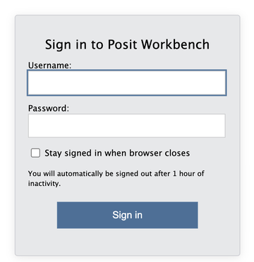
The notice just above the Sign in button warns you that you will be signed out for inactivity; an hour away from the keyboard really is all it takes. However, if you come back from lunch to a sign-in page, your session itself is still running on the server. Sign in again and you should find your work right where you left it. Even so, you should always save your work when you are stepping away from your computer, just in case!
Signing in brings you to the Projects page, which lists the sessions you already have running. On your first visit your own list should be empty, and the screenshot below shows a session already running only because it was taken on an account with a session left over from earlier in the day.
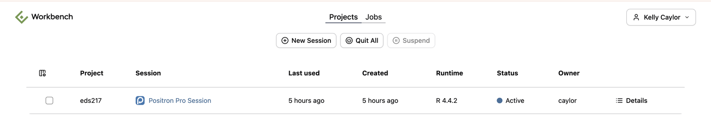
Each row gives you the project, the session name, when it was last used, when it was created, which runtime it is using, whether it is Active or Suspended, whose account it belongs to, and a Details link.
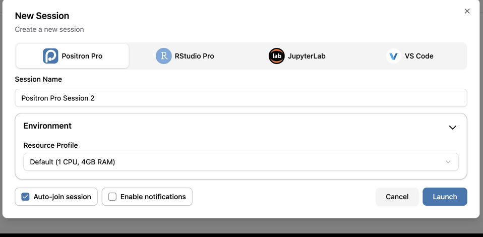
Workbench starts the session and opens Positron in the same browser tab. Starting a session for the first time takes a few seconds, so give it a moment.
Everything you learned about the Positron layout in your R course applies here: the Editor in the middle, the Console below it, the Explorer in the left sidebar, and the Session panes (Variables, Plots, Help) on the right.
Positron works best when it has a folder open, because the Explorer, the Console working directory, and every relative file path you write all start from that folder. So the first thing we will do is make a new folder for EDS 217, which will keep everything for this course.
From the New menu in the top left, choose New Folder from Template…. (The Welcome page offers the same wizard under the New Folder… icon, if that is where you happen to be.)
Positron offers four templates. Python Project, R Project and Jupyter Notebook all add scaffolding we do not need yet, so choose Empty Project and click Next.
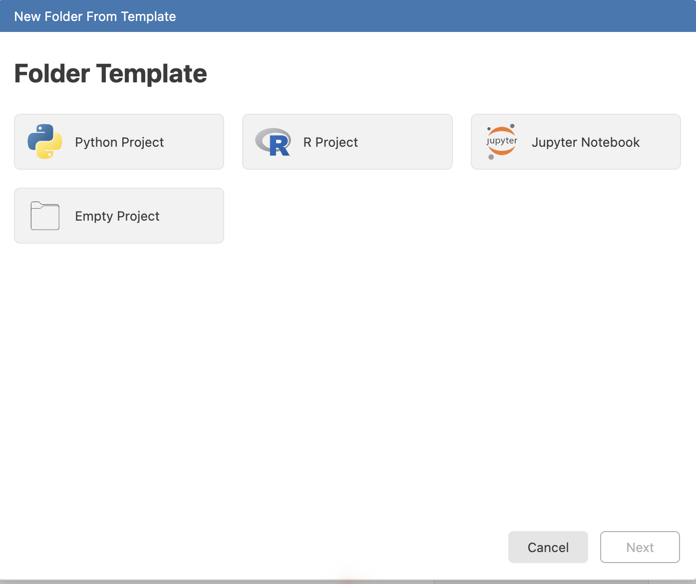
eds217./home/ followed by your username, which is your home directory on the server and where we want the folder to live.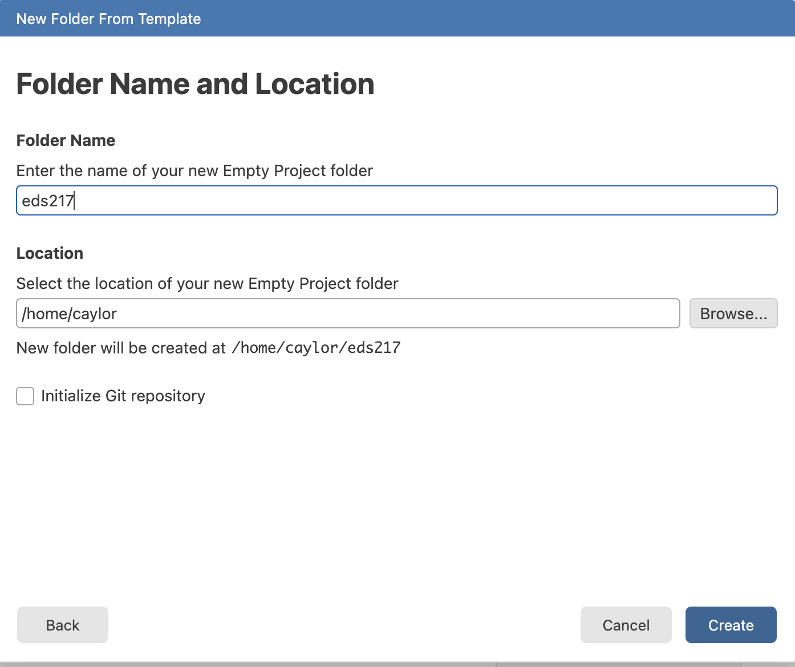
Positron confirms the folder and asks where to open it. Click Current Window, so that Positron reloads with eds217 as its open folder. New Window is the blue button and the one you do not want, because it opens a second browser tab and multiple tabs get confusing quickly.
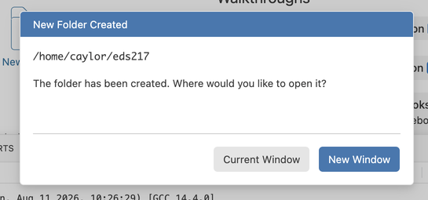
Positron reloads, and the Explorer on the left should now show an EDS217 heading with nothing under it yet. The Explorer puts folder names in capitals, so the folder you typed as eds217 is the same one. Everything you make this week should go in this folder.
Positron opens the folder with an R console, because R is the first interpreter it finds on the Bren server. The name in the top right corner will read R 4.4.2, and the Console will show you the R startup banner.
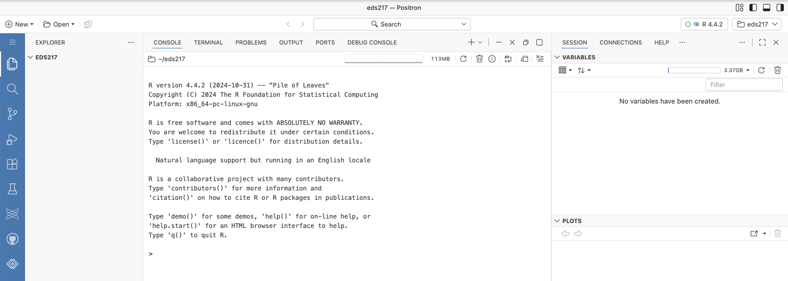
R is not the interpreter we want this morning, and switching over to Python takes three clicks.
Click the interpreter name in the top right corner. Positron lists the sessions you already have running and offers New Console Session… at the bottom. Click it.
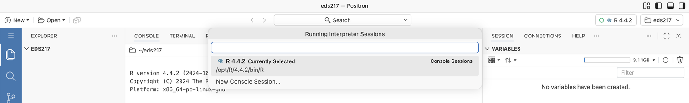
Positron lists every interpreter it can find on the server, and there are a lot of them. The one we want is marked Suggested. The first time you open this list you will probably have to scroll to find it, and once you have used it, it should sit at the top:
Python 3.11.15 (Conda: eds217)
/opt/miniforge3/envs/eds217/bin/python
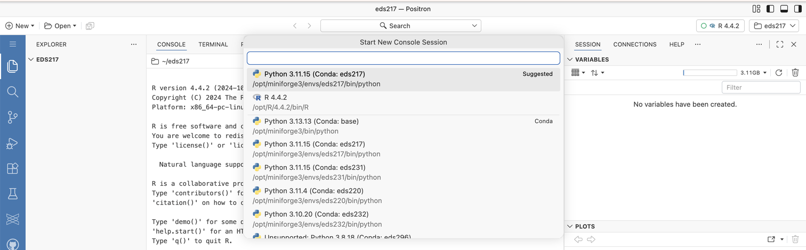
The Bren server hosts the environments for several MEDS courses, and their names all look alike: eds220, eds231, eds232, eds296. One of them, eds231, even runs the same Python 3.11.15 that ours does. The one you want says eds217. Read the name rather than trusting the position in the list.
Positron starts the Python session, and the Console prompt changes from > to >>>. The name in the top right should now read Python 3.11.15 (Conda: eds217).
Both sessions are still running, listed one above the other in the column to the right of the Console, and you can click between them at any time. Generally, for this course, it’s best just to delete the R console to avoid any accidental confusion.
Positron can run your Python code in two places. We will try both once, so you know which one to reach for later.
The Console is a Python prompt, and a prompt of that kind is called a REPL, which stands for Read-Eval-Print Loop. It is the same idea as the R console you have already used.
A REPL Reads what you type, Evaluates it, Prints the result, and Loops back for more. It is an interactive prompt for trying one line at a time.
Click into the Console, type an expression, and press Enter:
42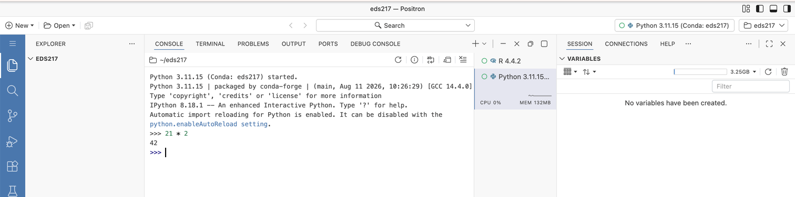
Read, evaluate, print, and then loop back around: you typed an expression, Python evaluated it, and the Console printed 42. We are only checking that the environment works here. We cover Python’s syntax properly in the next session this morning, including the arithmetic operators, and the comparison operators on Day 3.
Notice the folder name ~/eds217 above the Console output. The Console is working inside the folder you made, which is exactly what we wanted.
The Console is useful for quick checks, but nothing you type in it survives the session, so anything you want to keep should go in a notebook (or a .py file) instead.
For the rest of this course we write our code in Jupyter Notebooks, files ending in .ipynb. A notebook lets you combine code, its output, and narrative text in one document, so your analysis and the story of your analysis stay together. Combining them is known as literate programming, and it is exactly what we want for data science.
Let’s make the notebook you will use for the rest of today. We follow the same four steps at the start of every session, so you will get plenty of practice with them!
In the Explorer, hover over the EDS217 heading. Four small icons appear. Click the first one, whose tooltip reads New File…, then type the name
hello_world.ipynband press Enter.
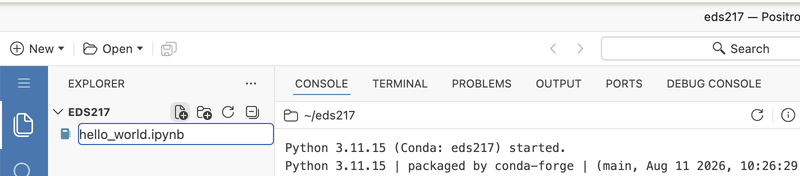
Naming a file at the moment you create it means you are far less likely to lose work to a file you never named. The .ipynb extension tells Positron to open the file as a notebook rather than as a page of text, so type it out in full.
Positron creates the file inside ~/eds217 and opens it as an empty notebook.
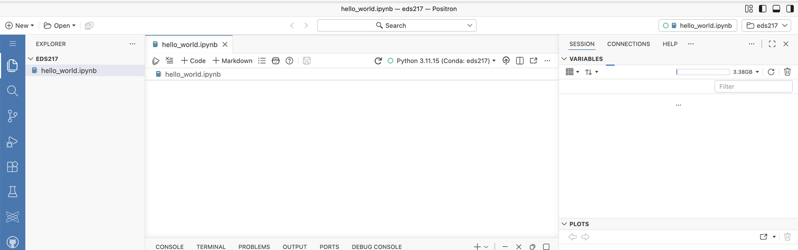
Look along the notebook’s action bar, right of centre, for the name of the kernel. It should already read Python 3.11.15 (Conda: eds217) with a small green ring beside it.
If it reads anything else, click it and choose Change Kernel. Positron opens a list titled Select Positron Notebook Kernel, which shows the same interpreters you saw for the Console. Pick the eds217 entry, and read the environment name rather than the Python version.
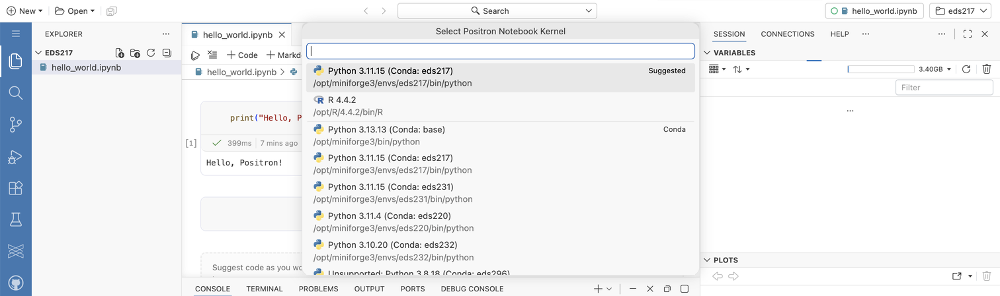
The name in the top right corner of the window controls the Console. The kernel selector in the notebook’s action bar controls this notebook. Each notebook keeps its own kernel, so you should check it every time you open a new one.
# Day 1: Session 1A - Positron & Jupyter Notebooks
[Session Webpage](https://eds-217-essential-python.github.io/course-materials/interactive-sessions/1a_positron_notebooks.html)
Date: 08/31/2026Change the date to the day you are working whenever you repeat this at the start of a later session. Run the Markdown cell (Shift + Enter) to render it into formatted text. Double-click a rendered Markdown cell to edit it again.
Click the save icon in the action bar, or press Ctrl + S (Cmd + S on macOS), and keep saving as you go. Saving is the last step of the ritual because it is the one you should repeat all morning rather than only once.
The ritual is done, and the rest of this section is what we do inside a notebook once it is set up.
Click + Code in the action bar to add a code cell, type the classic first line of code, and run it with Shift + Enter:
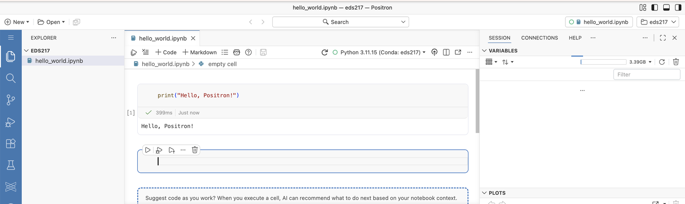
The output appears directly below the cell, along with the execution count in square brackets and how long the cell took to run. Shift + Enter runs the cell and moves to the next cell, and creates a new one if there is nothing below. Ctrl + Enter (Cmd + Enter) runs the cell and stays put.
The first time you run a cell, Positron asks whether it should suggest code as you work. Choose Not now. Getting a machine to write your code is a skill worth having, and it is worth having after you can write the code yourself, which is what these nine days are for.
Change the message inside the quotes to greet yourself by name, then re-run the cell with Shift + Enter. Did the output update? Did the number in the square brackets change?
Throughout the session: take notes in Markdown cells, write and run code in Code cells, and ask Cella or Kelly whenever something does not behave the way you expected.
A notebook is a stack of cells. Two kinds matter to us:
Hover between two cells, or below the last one, and Positron offers buttons to insert a new Code cell or a new Markdown cell at that point. Each cell also has its own small toolbar for running, moving, and deleting it.
Try some Markdown formatting in a new cell:
## My notes
This is a **Markdown** cell. I can write:
- **Bold** with `**text**`
- *Italic* with `*text*`
- [Links](https://positron.posit.co/)Add one more bullet to your Markdown cell, a link to the course website, then re-render it.
A few features that should save you time all week:
Tab to auto-complete it or see suggestions.help(print) in a code cell to read a function’s documentation, or add a ? after a name (print?) for a quick description. Pressing F1 with your cursor on a name opens the same documentation in the Help pane.%, like %whos to list your variables. We will use a few of them later in the week.In a code cell, type pri and press Tab. Does Positron offer to complete it to print? Then run help(print) and skim the description.
The Variables pane is not the right tool for very large DataFrames or arrays. Use df.head(), df.info(), and df.describe() for those. You will meet all three methods this afternoon and learn them properly on Day 2.
Ctrl + S / Cmd + S. Do this often.~/eds217, the folder you made this morning.Shift + Enter. Use Ctrl + Enter to run it without moving to the next cell.End interactive session 1A